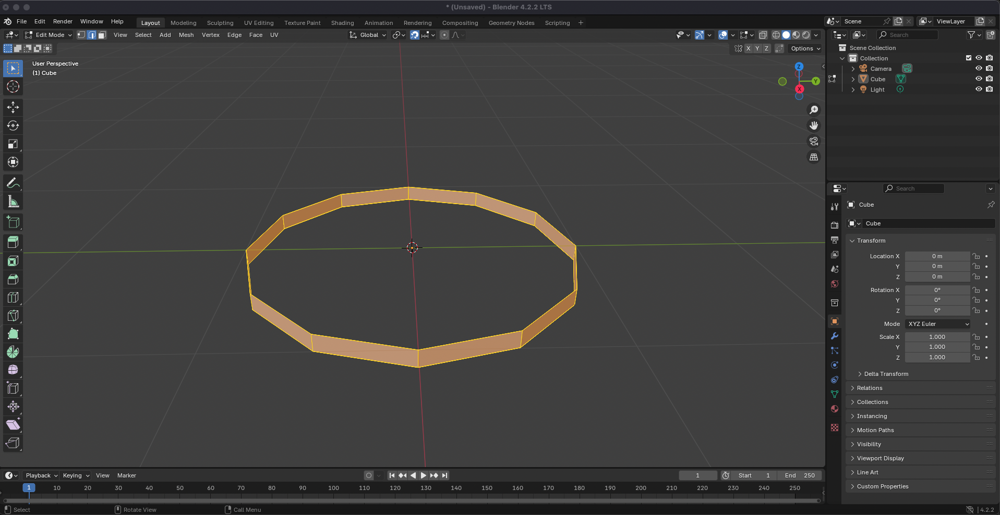

Low-Poly Modeling in Blender
Concept
My concept was to create a tea time tablescape. My three objects are the table, chair, and tea set. I also wanted to try creating many smaller objects that I could duplicate in order to create a complete scene while still allowing me to play around with Blender's basic tools. This allowed me to spend more time familiarizing myself with Blender and experiment with what I could do with low-poly modeling.
Process
Modeling process was documented in 15 minute intervals
I actually start the design process by being led astray by a tutorial. Here, I start with a circle plane.
Renders

Takeaways
I think it was definitely a slow start in getting used to the new software. It was really beneficial for me to create so many objects just to get a good grasp of the tools and associated shortcuts.
Utilizing different resources and tutorials was very important when it came to accomplishing what I was envisioning. It was helpful to see other people's approach to both utilizing the software and modeling certain objects.
Something that really helped me along the way was using images as references for whatever object I was trying to model. It was difficult to envision what something was supposed to look like based on my memory alone and I think trying to mimic certain shapes was really useful when it came to understanding an object's anatomy and how it translates to modeling in Blender.